![theia logo]()
Using the AI Features in the Theia IDE as an End User
This section documents how to use AI features in the Theia IDE (available since version 1.54, see also this introduction). These features are based on Theia AI, a framework for building AI assistants in tools and IDEs. Theia AI is part of the Theia platform. If you're interested in building your own custom tool or IDE with Theia AI, please refer to the corresponding documentation.
Please note that these features are in beta state. They may still undergo changes and improvements. In particular, using your own LLM might incur costs that you need to monitor closely. Use these features at your own risk, and we welcome any feedback, suggestions, and contributions!
Theia AI features within the Theia IDE are currently disabled by default. See the next section on how to enable them.
Learn more about the AI-powered Theia IDE:
👉 Introducing the AI-powered Theia IDE: AI-driven coding with full Control
👉 Watch the video: AI-Native Tools with Full Control: Theia AI & The AI-Powered Theia IDE In Action
👉 Download the AI-powered Theia IDE
Table of Contents
- Set-Up
- Current Agents in the Theia IDE
- Chat
- Task Context
- AI Configuration
- Prompt Template and Fragment Locations
- Prompt Fragments
- Slash Commands
- Custom Agents
- Agent-to-Agent Delegation
- Agent Skills (Alpha)
- MCP Integration
- Tool Call Confirmation UI
- Shell Execution Tool (Alpha)
- SCANOSS
- AI History
- Learn more
Set-Up
To activate AI support in the Theia IDE, go to Preferences and enable the setting “AI-features => AI Enable.”
To use Theia AI within the Theia IDE, you need to provide access to at least one LLM. Theia IDE comes with preinstalled support for several LLM providers (including OpenAI API-compatible models and Anthropic). Additionally, Theia IDE supports connecting to models via Ollama. See the the LLM Provider Overview and the corresponding sections below on how to configure these providers.
If you do not have access to an LLM, yet, here is an easy way to try it out:
👉 Testing the AI-Powered Theia IDE and Theia AI Applications for Free Using GitHub Models
Other LLM providers, including local models, can be added easily. If you would like to see support for a specific LLM, please provide feedback or consider contributing.
Each LLM provider offers a configurable list of available models (see the screenshot below for Hugging Face Models models).
To use a specific model in your IDE, configure it on a per-agent basis in the AI Configuration view.
Once you have configured at least one LLM, you can also select a default agent in the settings under "AI Features" => "Chat: Default Agent". This agent will handle your chat requests when you do not explicitly mention an agent using the @ symbol.
See also:
LLM Providers Overview
Note: Theia IDE enables connections to various models (e.g., HuggingFace, custom OpenAPI models, LlamaFile). However, not all models may work out of the box, as they may require specific customizations or optimizations. If you encounter issues, please provide feedback, keeping in mind this is an early-phase feature.
Many models and providers support using an OpenAI compatible API. In this case, we recommend using the Theia AI provider for OpenAI Compatible Models
Below is an overview of various Large Language Model (LLM) providers supported within the Theia IDE, highlighting their key features and current state.
| Provider | Streaming | Tool Calls | Structured Output | State |
|---|---|---|---|---|
| GitHub Copilot | ✅ | ✅ | ✅ | Public |
| OpenAI Official | ✅ | ✅ | ✅ | Public |
| OpenAI Compatible | ✅ | ✅ | ✅ | Public |
| Mistral (via OpenAI Compatible) | ✅ | ✅ | ✅ | Public |
| Azure | ✅ | ✅ | ✅ | Public |
| Anthropic | ✅ | ✅ | ❌ | Public |
| Google AI | ✅ | ✅ | ❌ | Beta |
| Ollama | ✅ | ✅ | ✅ | Alpha |
| Vercel AI | ✅ | ✅ | ✅ | Experimental |
| Hugging Face | ✅ | ❌ | ❌ | Experimental |
| LlamaFile | ✅ | ❌ | ❌ | Experimental |
GitHub Copilot
If you have an existing GitHub Copilot subscription, you can use the Copilot models directly within the Theia IDE without requiring additional API keys or subscriptions. Simply authenticate with your GitHub account, and models such as GPT 5.2 and Claude Opus 4.5 become available for all AI features.
Signing In
To authenticate with GitHub Copilot:
- Click the Copilot status bar item (bottom of the window) or run the command "Copilot: Sign In"
- A dialog appears with a device code—click the link to open GitHub's device authorization page
- Enter the code and authorize the application
- The dialog updates to show "Authenticated" and the status bar reflects your signed-in state
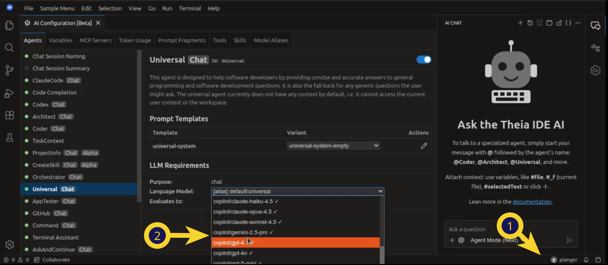
Once authenticated, Copilot models become available in the AI Configuration view and can be assigned to any AI agent.
Please note: Using GitHub Copilot requires an active Copilot subscription on your GitHub account and the Github Terms of Services apply.
Configuring Available Models
The available Copilot models can be configured in the settings under AI-features => Copilot => Models. The default configuration includes commonly available models. You can add or remove models based on what your Copilot subscription provides.
{
"ai-features.copilot.models": [
"gpt-5.2",
"claude-opus-4.5"
]
}GitHub Enterprise
For users with GitHub Enterprise, configure the enterprise URL in the settings under AI-features => Copilot => Enterprise URL:
{
"ai-features.copilot.enterpriseUrl": "github.mycompany.com"
}Commands
The following commands are available for managing Copilot authentication:
- Copilot: Sign In — Initiates the OAuth device flow authentication
- Copilot: Sign Out — Signs out and clears stored credentials
OpenAI (Hosted by OpenAI)
To enable the use of OpenAI, you need to create an API key in your OpenAI API account (https://platform.openai.com/) and enter it in the settings AI-features => OpenAiOfficial (see the screenshot below).
Please note: By using this preference the Open AI API key will be stored in clear text on the machine running Theia. Use the environment variable OPENAI_API_KEY to set the key securely.
Please also note that creating an API key requires a paid subscription, and using these models may incur additional costs. Be sure to monitor your usage carefully to avoid unexpected charges. We have not yet optimized the AI assistants in the Theia IDE for token usage.
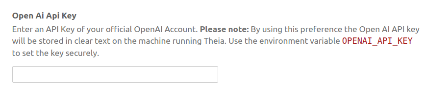
The OpenAI provider is preconfigured with a list of available models. You can easily add new models to this list, for example, if new options are released.
OpenAI Compatible Models (e.g. via VLLM)
As an alternative to using an official OpenAI account, Theia IDE also supports arbitrary models compatible with the OpenAI API (e.g., hosted via VLLM). This enables you to connect to self-hosted models with ease. To add a custom model, click on the link in the settings section and add your configuration like the following and check the Readme for all configuration options:
{
"ai-features.openAiCustom.customOpenAiModels": [
{
"model": "your-model-name",
"url": "your-URL",
"id": "your-unique-id", // Optional: if not provided, the model name will be used as the ID
"apiKey": "your-api-key", // Optional: use 'true' to apply the global OpenAI API key
"developerMessageSettings": "system" //Optional: Controls the handling of system messages: user, system, and developer will be used as a role, mergeWithFollowingUserMessage will prefix the following user message with the system message or convert the system message to user message if the next message is not a user message. skip will just remove the system message. Defaulting to developer.
}
]
}Mistral Models
Mistral models (including on "La Platforme") can be used via the OpenAI API and support the same feature set. Here is an example configuration:
"ai-features.openAiCustom.customOpenAiModels": [
{
"model": "mistral-large-latest",
"url": "https://api.mistral.ai/v1",
"id": "Mistral",
"apiKey": "YourAPIKey",
"developerMessageSettings": "system"
},
{
"model": "codestral-latest",
"url": "https://codestral.mistral.ai/v1",
"id": "Codestral",
"apiKey": "YourAPIKey",
"developerMessageSettings": "system"
}
]Azure
All models hosted on Azure that are compatible with the OpenAI API are accessible via the Provider for OpenAI Compatible Models provider. Note that some models hosted on Azure may require different settings for the system message, which are detailed in the OpenAI Compatible Models section and the Readme.
Anthropic
To enable Anthropics AI models in the Theia IDE, create an API key in your Anthropics API account (https://console.anthropic.com/) and enter it in the Theia IDE settings under AI-features => Anthropics.
Please note: The Anthropics API key will be stored in clear text. Use the environment variable ANTHROPIC_API_KEY to set the key securely.
Configure available models in the settings under AI-features => AnthropicsModels. Default supported models include choices like claude-3-5-sonnet-latest.
Google AI
Note: The Google AI provider is currently in beta state. We welcome feedback and contributions to help stabilize this integration.
To enable Google AI models in the Theia IDE, create an API key in your Google AI account (https://aistudio.google.com/) and enter it in the Theia IDE settings under AI-features => Google AI.
Please note: The Google AI API key will be stored in clear text. Use the environment variable GOOGLE_API_KEY to set the key securely.
Configure available models in the settings under AI-features => Google AI Models.
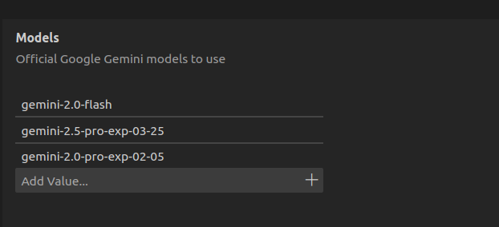
Ollama
To connect to models hosted via Ollama, enter the corresponding URL, along with the available models, in the settings (as shown below).
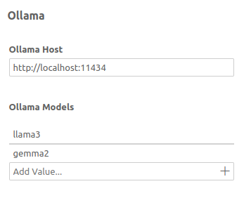
When using Ollama, it is advisable to check for the optimal settings and prompts for the specific model
to be used. For example, the default context size for all Ollama models is 2048 tokens. Depending on
available VRAM, this parameter (num_ctx) should be raised, especially for more complex scenarios
involving the various Chat agents. See below for details on this.
Note: The Ollama connector is still in Alpha state. If you experience problems while using it, you can
alternatively take advantage of the fact that some Ollama models support using an OpenAI compatible API. In
this case, you can alternatively use the
Theia AI provider for OpenAI Compatible Models. But note that the
context window size num_ctx (default: 2048)
cannot be configured this way. If you need a different context window size, you should create your own
derived model in Ollama, in which you set the num_ctx parameter to the desired value via the Modelfile.
Vercel AI
Note: The Vercel AI provider is currently experimental and may undergo changes. We are evaluating replacing some existing providers to reduce maintenance effort. Please try this provider and provide feedback to help us stabilize it.
The Vercel AI provider offers a unified way of communicating with LLMs through the Vercel AI SDK framework. It serves as an alternative to other providers and currently supports OpenAI and Anthropic APIs with both official and custom endpoints.
API Key Configuration
If you already have your OpenAI or Anthropic API keys set as environment variables (OPENAI_API_KEY or ANTHROPIC_API_KEY), no additional configuration is required for the Vercel provider.
If you configure your API keys through the settings, you need to explicitly set the API keys for the Vercel provider:
- Go to Preferences => AI features => Vercel AI
- Set your OpenAI and/or Anthropic API keys
Vercel AI: Official Models Configuration
The Vercel provider includes the most common OpenAI and Anthropic models by default. To add new official models, configure them in your settings.json:
{
"ai-features.vercelAi.officialModels": [
{
"id": "vercel/openai/new-gpt",
"model": "new-gpt",
"provider": "openai"
}
]
}Vercel AI: Custom Models Configuration
The Vercel provider supports custom models compatible with the Vercel AI SDK. Configure custom endpoints in your settings.json:
{
"ai-features.vercelAi.customModels": [
{
"model": "custom-model-name",
"url": "https://api.example.com/v1",
"id": "my-custom-model",
"apiKey": "your-api-key",
"provider": "openai",
"supportsStructuredOutput": true,
"enableStreaming": true
},
{
"model": "local-llama",
"url": "http://localhost:8000",
"id": "local-llama-model",
"apiKey": true,
"provider": "openai",
"supportsStructuredOutput": false,
"enableStreaming": false
}
]
}Configuration Options:
model(required): The model identifierurl(required): The API endpoint URLid(optional): Unique identifier for the UI. If not provided,modelwill be usedapiKey(optional): API key for the endpoint. Usetrueto use the global API keyprovider(optional): Specify the provider type (openai,anthropic)supportsStructuredOutput(optional): Set tofalseto disable structured output. Default:trueenableStreaming(optional): Set tofalseto disable streaming. Default:true
Hugging Face
Note: The Hugging Face provider is currently experimental. Many hosting options and models on Hugging Face support using an OpenAI compatible API. In this case, we recommend using the Theia AI provider for OpenAI Compatible Models. The Hugging face provider only supports text generation at the moment for models not compatible with the OpenAI API.
To enable Hugging Face as an AI provider, you need to create an API key in your Hugging Face account and enter it in the Theia IDE settings: AI-features => Hugging Face
Please note: By using this preference the Hugging Face API key will be stored in clear text on the machine running Theia. Use the environment variable HUGGINGFACE_API_KEY to set the key securely.
Note also that Hugging Face offers both paid and free-tier options (including "serverless"), and usage limits vary. Monitor your usage carefully to avoid unexpected costs, especially when using high-demand models.
Add or remove the desired Hugging Face models from the list of available models (see screenshot below). Please note that there is a copy button in the Hugging face UI to copy model IDs to the clipboard.
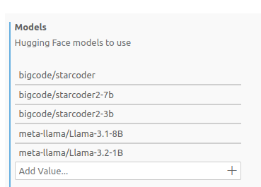
LlamaFile Models
Note: The LlamaFile provider is currently experimental. Not all LlamaFile models may work out of the box, and some may require specific configurations.
To configure a LlamaFile LLM in the Theia IDE, add the necessary settings to your configuration (see example below)
{
"ai-features.llamafile.llamafiles": [
{
"name": "modelname", //you can choose a name for your model
"uri": "file:///home/.../YourModel.llamafile",
"port": 30000 //you can choose a port to be used by llamafile
}
]
}Replace "name", "uri", and "port" with your specific LlamaFile details.
The Theia IDE also offers convenience commands to start and stop your LlamaFiles:
- Start a LlamaFile: Use the command "Start Llamafile", then select the model you want to start.
- Stop a LlamaFile: Use the "Stop Llamafile" command, then select the running Llamafile which you want to terminate.
Please make sure that your LlamaFiles are executable. For more details on LlamaFiles, including a quickstart, see the official Mozilla LlamaFile documentation.
Custom Request Settings
You can define custom request settings for specific language models in the Theia IDE to tailor how models handle requests, based on their provider.
Add the settings in settings.json:
"ai-features.modelSettings.requestSettings": [
{
"scope": {
"providerId": "ollama",
"modelId": "qwen3:14b"
},
"requestSettings": { "num_ctx": 40960 },
"clientSettings": {
"keepToolCalls": true,
"keepThinking": false
}
},
{
"scope": {
"providerId": "huggingface",
"modelId": "Qwen/Qwen2.5-Coder-32B-Instruct",
},
{
"requestSettings": { "max_new_tokens": 2048 },
}
}
]Key Fields
scope: any combination ofproviderId,agentId, andmodelId. Describes the model(s) to which the settings should be applied. The models are matched based on specificity (agent: 100, model: 10, provider: 1 points). This way, e.g., settings to be applied to all or just oneollamamodel can be specified, depending on whether only theproviderIdis specified or also themodelIdis given.requestSettings: Provider-specific options, such as token limits or stopping criteria. Check the documentation of the model provider for available values.clientSettings: Controls retention of reasoning and/or toolcall messages in the chat context. E.g., ifkeepThinkingis set totrue, the reasoning is kept in the context for follow-up chat messages. Else, earlier reasoning messages are removed (potentially saving input tokens).
Per-Chat Custom Request Settings
In addition to global custom request settings, Theia AI also supports an experimental feature that allows you to define custom request settings per individual chat session. This adds flexibility by enabling on-the-fly adjustments within a single conversation.
You can click an icon in the top-right corner of a chat window to access this functionality. Settings must currently be entered manually as JSON text. For example, you can adjust the temperature parameter for a particular session to make the language model more or less creative:
{
"temperature": 1
}The video below demonstrates how adjusting the temperature parameter for the Theia Code agent results in the generation of more imaginative code examples:
This feature also unlocks the ability to use provider-specific parameters, such as Claude's new "thinking mode," which is discussed in the following section. Future updates are expected to improve the default user interface, especially for commonly used settings.
Thinking Mode
Theia AI provides support for Claude's "thinking mode" when using Sonnet-3.7. By setting a custom request parameter—either globally or for a specific chat session—you can instruct the model to "think more." This is particularly useful for more difficult questions and shows its strengths when using agents like the Architect or Theia Coder on complex coding tasks.
To enable thinking mode, you need to add the following custom request setting:
"thinking": { "type": "enabled", "budget_tokens": 8192 }You can configure this setting either:
- Globally through the model settings (as described in the Custom Request Settings section)
- For a specific chat session using the chat-specific settings icon in the chat window
As mentioned in the previous section, the UI for chat-specific settings is currently experimental. We aim to improve its usability in the future, including making options like enabling thinking mode more accessible. If you build a custom tool based on Theia AI, you might want to introduce your own specific way of exposing thinking mode to your users anyways or not expose it at all.
Current Agents in the Theia IDE
This section provides an overview of the currently available agents in the Theia IDE. Agents marked as "Chat Agents" are available in the global chat, while others are directly integrated into UI elements, such as code completion. You can configure and deactivate agents in the AI Configuration view.
Theia Coder (Chat Agent)
An AI assistant designed to assist software developers. This agent can access the users workspace, it can get a list of all available files and folders and retrieve their content. Furthermore, it can suggest modifications of files to the user. It can therefore assist the user with coding tasks or other tasks involving file changes. See the dedicated Theia Coder Documentation for more details.
Universal (Chat Agent)
This agent helps developers by providing concise and accurate answers to general programming and software development questions. It also serves as a fallback for generic user questions. By default, this agent does not have access to the current user context or workspace. However, you can add variables, such as #selectedText, to your requests to provide additional context.
Orchestrator (Chat Agent)
This agent analyzes user requests against the descriptions of all available chat agents and selects the best-fitting agent to respond (using AI). The user's request is delegated to the selected agent without further confirmation. The Orchestrator is not activated by default, but you can select it as your default agent in the settings (see Chat).
Command (Chat Agent)
This agent is aware of all commands available in the Theia IDE and the current tool the user is working with. Based on the user request, it can find the appropriate command and let the user execute it.
Architect (Chat Agent)
An AI assistant designed to assist software developers with planning and analysis tasks. This agent can access the users workspace, it can get a list of all available files and folders and retrieve their content. It cannot modify files directly, but can create and manage implementation plans (task contexts). The Architect is ideal for answering questions about your project, planning new features, analyzing code architecture, and creating structured implementation plans that can be executed by the Coder agent.
The Architect agent supports multiple modes (see Mode Selection):
- Default Mode: Standard conversational mode for answering questions and general analysis
- Simple Mode: A streamlined mode for quicker responses
- Plan Mode: An enhanced planning mode where the Architect follows a structured workflow (Understand → Explore → Design → Refine) and can directly create and manage task context files as implementation plans
Plan Mode is particularly powerful for complex development tasks. In this mode, the Architect explores your codebase, creates detailed implementation plans, and stores them as task context files that can be executed with the Coder agent. See the Task Context section for more details on this workflow.
Code Completion (Agent)
This agent provides inline code completion within the Theia IDE's code editor. The agent supports both manual and automatic modes for code completion. When 'Automatic Code Completion' is enabled (which is the default), the agent makes continuous requests to the underlying LLM while coding, providing suggestions as you type. In manual mode (triggered via Ctrl+Alt+Space by default), users have greater control over when AI suggestions appear. Requests are canceled when moving the cursor.
Users can switch between modes in the settings ('AIFeatures'=>'CodeCompletion').
Please note that there are two prompt variants available for the code completion agent, you can select them in the 'AI Configuration view' => 'Code Completion' => 'Prompt Templates'.
You can also adapt the used prompt template to your personal preferences or to the LLM you want to use, see for example how to use the Theia IDE with StarCoder.
In the settings, you can specify 'Excluded File Extensions' for which the AI-powered code completion will be deactivated.
The setting 'Strip Backticks' will remove surrounding backticks that some LLMs might produce (depending on the prompt).
Finally, the setting 'Max Context Lines' allows you to configure the maximum number of lines used for AI code completion context. This setting can be adjusted to customize the size of the context provided to the model, which is especially useful when using smaller models with limited token capacity.
Terminal Assistance (Agent)
This agent assists with writing and executing terminal commands. Based on the user's request, it suggests commands and allows them to be directly pasted and executed in the terminal. It can access the current directory, environment, and recent terminal output to provide context-aware assistance. You can open the terminal assistance agent via Ctrl+I in the terminal view.
App Tester (Chat Agent)
The App Tester is an AI-driven agent that helps you test browser-based applications. It performs end-to-end (E2E) testing by interacting directly with your running application in a browser, focusing on testing the application through its UI rather than generating unit tests for business logic.
How to Use the App Tester:
- Accessing the Agent: Interact with the App Tester like any other chat agent by mentioning it in the chat interface.
- Launching Your Application: Ensure your web application is running (e.g., on
localhost:3000). - Prompting the App Tester: Formulate a natural language prompt addressing the agent. For example: "test my calculator app focus on multiplication only it is running on localhost 3000".
- Observing the Test Process: The App Tester will open a browser and interact with your application autonomously, performing actions like inputting values and clicking buttons. It generates test cases on its own and informs you of any issues detected, comparing expected results with actual results.
- Reviewing Test Results: Once testing is complete, the App Tester provides detailed test results describing what it found, including issues and discrepancies.
- Integrating with Code Fixing: The detailed test results can be fed back to a coding agent (like "Theia Coder") to help automatically fix detected issues, creating a seamless workflow from testing to bug resolution.
AppTester Modes:
The App Tester offers two mode variants that use different underlying technologies for browser interaction:
- Default Mode (Playwright): Uses the Playwright MCP server for browser automation. If you use the App Tester for the first time and the Playwright MCP server is not yet installed, the agent will help you install it.
- Next Mode (DevTools): Uses the DevTools MCP server instead of Playwright for testing interactions. This variant provides more robust and flexible testing capabilities directly within the IDE environment.
To switch to the "Next" variant, use the mode selector in the chat input area or change the prompt variant to app-tester-system-next in the AI Configuration view. We recommend trying the new AppTester mode and providing feedback to help us improve it further.
Automated Testing with the /test-with-app-tester Command:
The /test-with-app-tester slash command enables an automated implement-and-test workflow when using Theia Coder in Agent Mode. After implementing your requested changes, Coder automatically delegates to the AppTester to verify the implementation. If tests don't pass, the agents can iterate to fix issues—creating a complete automated development loop.
To use this workflow:
- Make sure Coder is in Agent Mode (see Theia Coder Modes)
- Include the slash command in your request, for example:
@Coder Add a reset button to my calculator app /test-with-app-tester
- Coder will implement the changes and then automatically invoke AppTester to verify the implementation
- If issues are found, Coder will attempt to fix them and re-test until the implementation passes
The following video shows the AppTester agent in action:
Claude Code (Chat Agent)
Claude Code is Anthropic's AI coding assistant natively integrated into the Theia IDE. The following video provides an in-depth demo:
Prerequisites:
Before using Claude Code in Theia IDE, you need to install it. Visit https://www.claude.com/product/claude-code for more details.
Configuration:
If you want to use a specific Anthropic API key for Claude Code in Theia IDE, you can set it in one of two ways:
- Via Settings: Set the preference key
ai-features.anthropic.AnthropicApiKeyin the Theia IDE settings - Via Environment Variable: Set the environment variable
ANTHROPIC_API_KEY
Otherwise, Theia will fall back to the active authentication currently configured directly in Claude Code.
The Claude Code executable should be detected automatically. If the detection fails, you can manually configure the executable path in the preferences (ai-features.claudeCode.executablePath).
Usage:
Once configured, Claude Code is available in the chat view via the agent @ClaudeCode. Simply mention @ClaudeCode in your chat requests to interact with it.
For more information on configuring Claude Code's permissions, commands, MCP servers, hooks, and other advanced features, refer to the Claude Code documentation.
Customization:
You can customize the system message appendix that is passed to Claude Code through the Theia agent configuration in the AI Configuration view. This allows you to tailor Claude Code's behavior to your specific needs and workflows.
Project Info (Chat Agent)
Note: This agent is currently in alpha state and marked as such in the agent list.
The Project Info agent helps you create and maintain a project information file (.prompts/project-info.prompttemplate) that provides context about your workspace to other AI agents. This file serves as a knowledge base that helps AI assistants understand your project's architecture, conventions, and specific requirements. The project info file is used by default by Theia Coder.
How to Use:
When you first interact with the Project Info agent, it will ask you to choose your preferred working mode:
- Auto-exploration mode: The agent explores your workspace automatically and creates an initial project information file based on what it discovers.
- Manual mode: The agent guides you through each section, asking for your input and offering to answer questions for you.
Project Info Structure:
The applied structure and content for the generated project file can be reviewed in the prompt template project-info-template accessible in the agent settings under the ProjectInfo agent.
The default storage location for project info files is .prompts/. You can configure this location in the settings under ai-features.promptTemplates.WorkspaceTemplateDirectories.
Example Usage:
Simply mention @ProjectInfo in the chat and describe what you want to do:
- "Create project info for my workspace"
- "Update the project info with new testing guidelines"
- "Complete the missing sections in my project info"
The /remember Command
The /remember slash command provides a convenient way to capture important context from your conversation and add it to the project info file. This command is available when using the Architect or Coder agents.
During a conversation, you may correct the AI agent about project-specific details or provide clarifications about your codebase. The /remember command analyzes your conversation history and extracts these corrections and clarifications, then delegates to the ProjectInfo agent to update the project information file.
The command focuses specifically on information where you corrected the AI's assumptions or provided context it couldn't discover on its own. This helps prevent future AI interactions from making the same mistakes.
To use the command, simply type /remember after a conversation where you provided corrections or clarifications:
@Coder /remember
You can also provide an optional topic hint to focus the extraction on a specific area:
@Architect /remember testing conventions
The extracted information is then added to your .prompts/project-info.prompttemplate file, making it available for future AI interactions.
GitHub (Chat Agent)
The GitHub agent enables you to interact with GitHub repositories, issues, pull requests, and other GitHub features directly from the Theia IDE. This agent uses the GitHub MCP (Model Context Protocol) server to provide comprehensive access to GitHub's functionality through natural language commands. The GitHub agent automatically detects the current GitHub repository you're working with (if your workspace is a GitHub repository).
Setup:
When you first interact with the GitHub agent, it will check whether the GitHub MCP server is properly configured. If the server is not yet set up, the agent will guide you through the configuration process
Example Usage:
Simply mention @GitHub in the chat and describe what you want to do:
- "Create a new issue for the bug I found"
- "Show me the latest pull requests"
- "List all open issues with the 'bug' label"
- "Create a new branch for feature development"
- "Search for code containing authentication logic"
Note: The GitHub agent requires a valid GitHub Personal Access Token with appropriate permissions for the operations you want to perform. Make sure to follow GitHub's security best practices when creating and storing your access token.
The video below demonstrates the GitHub agent in action, embedded into a full workflow:
GitHub Slash Commands
Theia IDE provides dedicated slash commands for working with GitHub issues and pull requests directly from the chat. These commands are available for the Architect and Coder agents and allow them to delegate to the GitHub agent to retrieve comprehensive information about issues and pull requests before analyzing or implementing solutions.
/analyze-gh-ticket <ticket-number> (Architect agent)
This command retrieves all details about a GitHub issue, including the description, comments, and any referenced issues. The Architect agent then assesses whether the ticket can be solved by AI and either creates a detailed implementation plan or asks clarifying questions if the requirements are unclear.
To use it, mention the Architect agent and type the command:
@Architect /analyze-gh-ticket 1234
/fix-gh-ticket <ticket-number> (Coder agent)
Similar to /analyze-gh-ticket, this command retrieves all issue details via the GitHub agent. Instead of creating a plan, the Coder agent directly implements the solution if the ticket is deemed implementable. If the requirements are ambiguous or information is missing, it will ask for clarification first.
To use it, mention the Coder agent and type the command:
@Coder /fix-gh-ticket 1234
/address-gh-review <pr-number> (Coder agent)
This command retrieves all review comments from a pull request and categorizes them by type (code changes, style fixes, clarification questions, etc.). The Coder agent then either implements all safely addressable changes or asks for clarification on ambiguous comments before proceeding.
To use it, mention the Coder agent and type the command:
@Coder /address-gh-review 5678
These commands require the GitHub MCP server to be configured with a valid access token. If the server is not yet set up, the GitHub agent will guide you through the configuration process.
Chat
The Theia IDE provides a global chat interface where users can interact with all chat agents. If you do not explicitly mention an agent using the @ symbol (e.g., @Coder), your request will be sent to the configured default agent. You can configure your preferred default agent in the settings under "AI Features" => "Chat: Default Agent". Press @ in the chat to see a list of available chat agents and to talk to a specific agent directly.
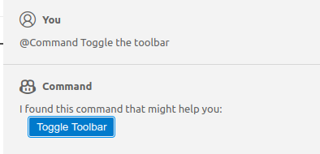
Some agents produce special results, such as buttons (shown in the screenshot above) or code that can be directly inserted.
Chat Session History
The Theia IDE automatically preserves your chat sessions, allowing you to access your conversation history even after restarting the application.
To access your chat history, click the "Show Chats..." button in the chat view toolbar (located in the top area of the chat view). This opens a dialog displaying all available chat sessions, including both your currently active sessions and previously archived sessions.
Chat sessions are automatically saved to disk as you interact with AI agents. The system stores up to 25 chat sessions by default. When this limit is reached, the oldest sessions are automatically deleted to make room for new ones. You can also manually delete sessions from the "Show Chats..." dialog if you no longer need them.
The persistence system preserves the complete state of your chat sessions, including:
- All messages and responses from different agents
- Message alternatives created through editing chat requests
- File changesets with functional apply, revert, and open operations
Chat sessions are stored in the .theia/chatSessions/ directory within your user home directory.
Starting Chat from the Editor
You can initiate AI chat sessions directly from the editor context. To start a session, right-click anywhere in a file - either at the cursor position or with a selection—and choose the "Ask AI" option. Alternatively, use the shortcut Ctrl+I to trigger the same action.
The context of the chat includes information about the current editor state, such as the selected range or the cursor location, which helps the AI provide more relevant responses. This approach is particularly useful when you need assistance with specific code segments.
The video above demonstrates how Theia Coder can be used to generate a test case for a specific function in a file, starting directly from the editor context.
Agent Pinning
The Agent Pinning feature, reduces the need for repeated agent references.
- When you mention an agent in a prompt and no agent is pinned, the mentioned agent is automatically pinned.
- If an agent is already pinned, mentioning a different agent will update the pinned agent.
- You can manually unpin an agent through the chat interface if needed.
Mode Selection
Some agents offer multiple operational modes that change how they respond to requests. Mode selection provides quick access to switch between these modes directly in the chat input UI, without navigating to the settings or AI Configuration view.
When an agent supports modes, a mode selector dropdown appears in the chat input area. In the Theia IDE, the following agents provide mode selection:
- Coder Agent: Edit Mode, Agent Mode, and Agent Mode (Next)
- Architect Agent: Default Mode, Simple Mode, and Plan Mode (see Architect agent)
For details on what each mode does for these agents, see the Theia Coder Documentation and the Architect agent section.
About "Next" Modes: Some agents offer a "Next" variant of their modes (e.g., "Agent Mode (Next)" for the Coder agent). These variants contain the latest improvements that are still being validated in practice before becoming the default. If you want to use the most recent enhancements, we recommend trying the "Next" version. Once the improvements have been sufficiently validated, they will be promoted to the standard mode.
Mode selector dropdown in the chat input area allowing users to switch between agent modes.
The mode selector initializes to reflect the current default prompt variant configured in the AI Configuration view. When you select a different mode, it overrides the configured prompt variant for that session. You can also cycle through available modes using the Shift+Tab keyboard shortcut while focused on the chat input.
Mode selection is a convenience feature built on top of the existing prompt variant system. Agents can choose to expose certain prompt variants as easily accessible modes, making it more intuitive to switch between different behaviors during a conversation.
Image Support
Theia IDE (and Theia AI) supports adding images to chat sessions, which is especially useful when visual context is needed to solve problems or explain issues.
You can add images to chat sessions in several ways:
- Click the "+" icon in the chat input area
- Drag and drop images directly into the chat
- Copy and paste images from your clipboard
When an image is included in your request, it will be sent to the LLM along with your text (if the selected model supports image inputs). This enables you to provide visual context that can help the AI understand and address your questions more effectively (see example screenshot below).
Context Variables
You can augment your requests in the chat with context by using variables. For example, to refer to the currently selected text, use #selectedText in your request.
You can also pass context files into the chat to further specify the scope of your request. To do this, drag and drop a file into the chat view, or use the auto-completion feature by typing #file or directly typing #<file-name>.
Note that #file:src/my-code.ts in the user message is replaced to the workspace-relative path, alongside attaching the file to the context. This allows adding the file content to the context and then referring to the file in the chat input text efficiently in one go.
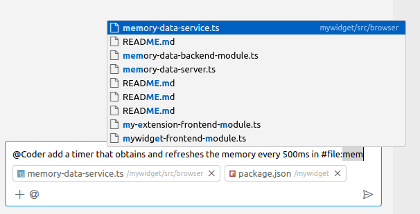
Here are some example of the most frequently used variable, you can see the full list of available variables when typing # in the chat input field (see also how Theia Coder uses context variables):
#file:filePath- Inserts the path to the specified file relative to the workspace root. After typing#file:, auto completed suggestions will help you specifiying a file. The suggestions are based on the recently opened files and on the file name you type.#filePath- Shortcut for#file:filePath; after typing#following by the file name you can directly start your search for the file you want to add and reference in your message.#currentRelativeFilePath– The relative path of the currently selected file (in the editor or explorer)#currentRelativeDirPath– The directory path of the currently selected file#selectedText– The currently highlighted text in the editor. Please note that this does not include the information from which file the selected text is coming from.
Hint: The context file support in Theia IDE shown above is built on the generic context variable capabilities of the underlying Theia AI framework. It therefore can be customized and extended with tool-specific context variable types. See the Theia AI documentation for more details.
Editing Chat Requests
Users can modify previously sent messages in the chat UI through the "Edit" option. This functionality is especially helpful for refining prompts if you are unhappy with the LLMs response, or experimenting with various phrasing without losing context or initiating a new conversation from the beginning.
When you edit a message, a new branch of conversation is created, preserving access to the original thread while continuing the dialogue based on your modifications.
To use this feature, click the edit icon located next to each message you send in the chat. Upon clicking, the original message opens for editing. Submitting the changes will transition the conversation to follow the newly edited message while maintaining access to prior versions.
Below is a screenshot depicting the edit button and options to switch between conversation branches:
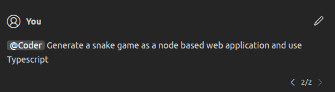
Task Context
Task Context is a powerful approach for structured, reproducible AI-assisted development in the Theia IDE. This feature transforms how you work with AI agents by externalizing your intent into dedicated files that serve as persistent, editable records of what you want the AI to accomplish. Watch the video below for a introduction.
Set-up for Task Context
Task contexts will be stored as Mark Down files. You can set the directory in the settings (Setting id: ai-features.promptTemplates.taskContextStorageDirector), the default is: .prompts/task-contexts).
Manually creating a Task Context File
Instead of starting with a chat prompt, create a dedicated task context file that externalizes your requirements:
- Create a new file (e.g.,
my_task.md) in a dedicated directory (by default.prompts/task-context/) - Write your initial requirement in this file (e.g., "add a reset button to the token usage view")
- Initiate a session with this file using the command
Task Context: Initiate Session - Select your desired agent to link the chat session to your externalized prompt file
- Just hit enter to start the request in the chat
This approach makes your prompt reproducible and allows you to refine it before sending it to the LLM.
Planning with the Architect Agent
For complex tasks, it's highly beneficial to use a planning agent before a coding agent. The Architect agent offers two approaches for creating implementation plans:
Plan Mode (Recommended)
Plan Mode is an enhanced planning workflow where the Architect directly creates and manages implementation plans as task context files. To use Plan Mode:
- Switch to Plan Mode using the mode selector in the chat input area (or press
Shift+Tabto cycle through modes) - Describe your task to the Architect (e.g., "Plan adding a dark mode toggle to the application")
- The Architect follows a structured workflow: Understand your requirements, Explore the codebase, Design a solution, and Refine the plan based on your feedback
- The Architect creates a task context file directly, which opens in the editor for your review
- You can ask the Architect to refine the plan, and it will update the task context file accordingly
- When satisfied, use the "Execute with Coder" action that appears in the UI to implement the plan
Switching to Plan Mode, creating an implementation plan with the Architect agent, and executing it with Theia Coder.
Plan Mode supports multiple plans per session. Each plan you create gets its own "Execute with Coder" action in the UI, allowing you to work on several related plans and execute them independently.
Tip: Plan Mode also works well with the /analyze-gh-ticket slash command (e.g., @Architect /analyze-gh-ticket 1234) to analyze a GitHub issue and create an implementation plan for it.
Default Mode with Summarization
Alternatively, you can use the Architect in Default Mode and manually trigger plan creation:
- Select the "Architect" agent when initiating your chat session and describe your task
- The Architect will analyze your workspace and create a detailed plan of what should be coded
- Use the "Summarize this session as a task for coder" button in the chat
The system will send the plan to an underlying LLM, which summarizes it into a structured format and creates a task context file. This structured task context includes comprehensive details such as:
- Problem description and scope
- Detailed design and implementation steps with specific files
- Testing strategy (both automated and manual)
- Deliverables and PR description
Please note that you can adapt this template by modifying the prompt architect-tasksummary.
Implementing with the Coder Agent
After reviewing and refining the task context:
- Review the plan and make any necessary adjustments
- If modifications are needed, return to the planning agent and provide feedback
- Use the "Update Task Context" action to incorporate changes
- When the plan is finalized, trigger the Coder agent with the updated task context
Because the Coder agent is now working from a detailed and verified plan, it produces much higher quality results.
For more details about Task Context, visit Structure AI Coding with Task Context.
AI Configuration
The AI Configuration View allows you to review and adapt agent-specific settings. Select an agent on the left side and review its properties on the right:
- Enable Agent: Disabled agents will no longer be available in the chat or UI elements. Disabled agents also won't make any requests to LLMs.
- Edit Prompts: Click "Edit" to open the prompt template editor, where you can customize the agent's prompts (see the section below). "Reset" will revert the prompt to its default.
- Language Model: Select which language model the agent sends its requests to. Some agents have multiple "purposes," allowing you to select a model for each purpose.
- Variables and Functions: Review the variables and functions used by an agent. Global variables are shared across agents, and they are listed in the second tab of the AI Configuration View. Agent-specific variables are declared and used exclusively by one agent.
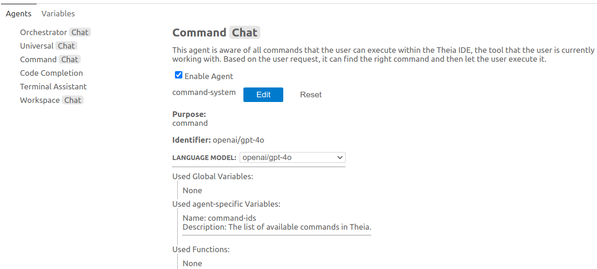
View and Modify Prompts
In the Theia IDE, you can open and edit prompts for all agents from the AI Configuration View. Prompts are shown in a text editor (see the screenshot below). Changes saved in the prompt editor will take effect with the next request made to the corresponding agent. You can reset a prompt to its default using the "Reset" button in the AI configuration view or the "Revert" toolbar item in the prompt editor (top-right corner).
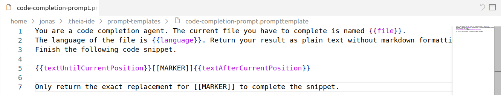
Note that some agents come with several prompt variants, you can choose the active variant in the drop down box. To create user-defined variants, browse to the prompt templates directory and create/copy a new file starting with the same id as the default prompt of an agent.
Variables and functions can be used in prompts. Variables are replaced with context-specific information at the time of the request (e.g., the currently selected text), while functions can trigger actions or retrieve additional information. You can find an overview of all global variables in the "Variables" tab of the AI Configuration View and agent-specific variables in the agent's configuration.
Variables are used with the following syntax:
{{variableName}}Tool functions are used with the following syntax:
~{functionName}Prompt Template and Fragment Locations
By default, custom prompts, prompt variants, and prompt fragments are created and read from user-wide local directories that can be configured in the settings ("AI-Features"=>"Prompt Templates"). This setting is valid for all projects. In addition, users can configure workspace-specific directories and files (available as prompts and prompt fragments) to introduce project-specific adaptations and additions.
Allow project specific prompt locations
Users can specify workspace-relative directories (settings "AI-Features"=>"Prompt Templates"), individual files, and relevant file extensions for prompt templates and fragments. Workspace-specific prompts have priority, so you can override the prompts of the available agents in a workspace-specific way. Furthermore, these workspace-specific templates are accessible via the prompt fragment variable (e.g., #prompt:filename) in both the chat interface and agent prompt editors.
This feature supports two main use cases:
-
Augmenting prompts with project-specific information: Developers can create a dedicated file—such as
project-info.prompttemplate—to include domain knowledge, architectural decisions, or coding guidelines. When referenced via#prompt:project-info, this information can guide AI behavior and improve prompt relevance. -
Creating reusable project-specific prompts: Teams can maintain a collection of shortcut prompts for common actions like "generate a test according to specifics," enabling consistent and efficient communication with AI agents within a project. See an example for this use case in the previous section. As mentioned, you can also override the prompts of the default agents with project-specific versions.
In future releases, we may include pre-configured defaults, such as adding #prompt:project-info in the system messages of specific agents like Coder or Architect.
Prompt Fragments
Prompt fragments enable users to define reusable parts of prompts for recurring instructions given to an AI. These fragments can be referenced both in the chat interface (for one-time usage) and within the prompt templates of agents (to customize agents with reusable fragments). For example, users can define a prompt fragment that specifies a task, provides workspace context or coding guidelines, and then reuse it across multiple AI requests without having to repeat the full text.
To support this functionality, Theia includes a special variable #prompt:promptFragmentID that takes the ID of a prompt fragment as an argument. In the following video, we demonstrate the usage of a prompt fragment to create a reusable workflow (documenting a file). We add a new directory to our workspace with a prompt template in it. We then make sure that the directory is configured as a location for prompt templates (also see Prompt Template and Fragment Locations). Now we can use the prompt fragment in the chat. We could also add it to the prompt template of an agent instead. Please note that for more complex workflows, Theia AI also makes it very easy to create custom agents from scratch (see Custom Agents).
Prompt fragments can recursively reference other fragments, variables, and tool functions, which is particularly useful for reusable additions to standard prompts, such as adding access to MCP servers.
Slash Commands
Slash commands provide an intuitive way to execute pre-defined prompt templates directly in the AI chat interface. Instead of using the technical #prompt:fragmentid syntax, you can simply type /commandname arguments to invoke a command with a familiar, user-friendly interface.
Creating and using a simple slash command example.
When you type a slash command, it inserts the corresponding pre-defined prompt fragment into your chat. Commands support argument substitution, allowing you to customize the prompt with specific values. The system includes autocomplete support directly in the chat input, making it easy to discover and use available commands.
Using Slash Commands
To use a slash command:
- Type
/in the chat input to trigger autocomplete and see all available commands - Select a command from the list or continue typing its name
- Add any required arguments after the command name (e.g.,
/explain TypeScript generics) - Press Enter to execute the command
Commands can be scoped to specific agents, ensuring that only relevant commands appear based on your current context. If you have an agent pinned or mention a specific agent (e.g., @Universal), only commands available for that agent will be shown in the autocomplete.
Creating Custom Slash Commands
You can create your own custom slash commands by adding prompt templates with command metadata. Create a new file in your prompt templates directory (see Prompt Template and Fragment Locations) with the following structure:
---
isCommand: true
commandName: mycommand
commandDescription: Description of what this command does
commandArgumentHint: [optional hint about expected arguments]
commandAgents:
- Universal
- Coder
---
Your prompt template content here.
You can use $ARGUMENTS for all arguments, or $1, $2, etc. for individual arguments.Metadata fields:
isCommand: Set totrueto register this prompt template as a slash commandcommandName: The name users type after the slash (e.g.,mycommandfor/mycommand)commandDescription: A brief description shown in the autocomplete listcommandArgumentHint(optional): Hint text shown to users about expected argumentscommandAgents(optional): List of agent IDs that can use this command. If omitted, the command is available to all agents
Argument placeholders:
In your prompt template, you can use the following placeholders to access command arguments:
$ARGUMENTS: Replaced with all arguments as a single string$1,$2,$3, etc.: Replaced with individual arguments by position- Arguments containing spaces can be quoted:
/hello "John Doe"treats "John Doe" as a single argument
Example command:
---
isCommand: true
commandName: explain
commandDescription: Explain a programming concept
commandArgumentHint: concept to explain
commandAgents:
- Universal
---
Please provide a clear and concise explanation of $ARGUMENTS.
Include examples where appropriate.This creates a /explain command that can be used like /explain TypeScript generics or /explain async/await.
Technical Note
Slash commands are syntactic sugar for prompt variable references. When you use a slash command, it is internally converted to the #prompt:commandName|args format, maintaining compatibility with the broader Theia AI architecture.
Demonstration
The following video demonstrates the use and creation of slash commands.
Custom Agents
Custom agents enable users to define new chat agents with custom prompts on the fly, allowing the creation of custom workflows and extending the Theia IDE with new capabilities. These agents are immediately available in the default chat. For simpler workflows, you might also consider using Prompt Fragments instead.
Custom agents can either be global (stored in the global prompt directory) or workspace-specific (stored in a workspace-specific directory). Workspace-specific custom agents take precedence in case the same id is used.
To define a new custom agent, navigate to the AI Configuration View and click on "Add Custom Agent".
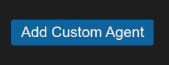
If workspace-specific prompt directories are configured in settings (see Prompt Template and Fragment Locations), you can decide next where to add the custom agent.
Next, a YAML file will be opened where all available custom agents in a specific directory are defined. Below is an example configuration:
- id: obfuscator
name: Obfuscator
description: This is an example agent. Please adapt the properties to fit your needs.
prompt: Obfuscate the following code so that no human can understand it anymore. Preserve the functionality.
defaultLLM: openai/gpt-4o- id: A unique identifier for the agent.
- name: The display name of the agent.
- description: A brief explanation of what the agent does.
- prompt: The default prompt that the agent will use for processing requests.
- defaultLLM: The language model used by default.
Custom agents can be configured in the AI Configuration View just like other chat agents. You can enable/disable them, modify their prompt templates, and integrate variables and functions within these templates to enhance functionality.
The following demonstrations shows an example on how to create a custom agent:
Agent-to-Agent Delegation
Agent-to-agent delegation is a powerful feature in Theia AI that enables one AI agent to delegate specific tasks to another specialized agent. This creates multi-agent workflows where each AI agent can focus on its dedicated responsibility, leading to better automation and specialization.
How Agent-to-Agent Delegation Works
The delegation system allows agents to:
- Delegate specialized tasks: One agent can hand off specific work to another agent that's better suited for the task
- Chain workflows: Create complex, multi-step processes by connecting different agents
- Maintain context: The delegating agent can pass along necessary context and continue its work after delegation
- Automate repetitive tasks: Set up workflows where routine tasks are automatically handled by specialized agents
Using the Delegation Function
The following demonstrations shows an example on how to use the delegate function with a custom agent:
Agent Skills (Alpha)
Agent Skills provide a way to extend AI agents with reusable instructions and domain knowledge. Skills are defined in SKILL.md files that contain specialized guidance, workflows, or domain-specific knowledge that agents can leverage when responding to requests.
What are Skills?
A skill is a directory containing a SKILL.md file with YAML frontmatter (defining name and description) and markdown content that provides instructions or knowledge for agents. For example, you might create a "code-review" skill that defines how code reviews should be performed in your project, or a "testing" skill that specifies your testing conventions and requirements.
Skills allow you to:
- Capture specific conventions and guidelines in a reusable format
- Provide domain-specific knowledge to AI agents
- Create consistent workflows that agents can follow
- Share specialized instructions across your team
Using Skills
There are two ways to use skills in your AI chat requests:
1. Slash Commands
The easiest way to use a skill is via a slash command. Simply type /skillName in the chat input. For example, if you have a skill named code-review, type:
/code-review Please review the changes in my current fileThe skill's instructions will be injected into the request, guiding the agent's response.
Using a skill via slash command to perform a customized code review.
2. On-Demand Loading by Agents
Agents can also load skills dynamically. When the {{skills}} variable is included in an agent's prompt, the agent receives a list of all available skills with their names and descriptions. The agent can then use the getSkillFileContent function to load the full content of any skill it determines would be helpful for the current request.
This approach is useful for agents that need to select the most appropriate skill based on the user's request, rather than requiring the user to specify a skill explicitly.
Creating Skills
To create a skill manually:
- Create a directory for your skill in one of the skill directories (see Skill Directories)
- The directory name must be lowercase kebab-case (e.g.,
code-review,test-generation) - Create a
SKILL.mdfile inside the directory with the following structure:
---
name: code-review
description: Provides guidelines for performing thorough code reviews focusing on quality, maintainability, and best practices.
---
# Code Review Skill
## Overview
This skill provides instructions for performing comprehensive code reviews.
## Review Checklist
1. **Code Quality**: Check for clean, readable, and maintainable code
2. **Error Handling**: Ensure proper error handling and edge cases
3. **Performance**: Look for potential performance issues
4. **Security**: Check for security vulnerabilities
5. **Testing**: Verify adequate test coverage
## Guidelines
- Be constructive and respectful in feedback
- Explain the reasoning behind suggestions
- Prioritize issues by severity
- Suggest improvements, not just point out problemsThe YAML frontmatter (between the --- markers) must include:
- name: Must be lowercase kebab-case and match the directory name exactly
- description: A brief description of the skill (max 1024 characters)
The markdown content after the frontmatter contains the actual instructions that will be provided to the agent.
Skill Directories
Skills are discovered from multiple locations in the following priority order (first directory wins on duplicates):
- Workspace:
.prompts/skills/in your workspace root (project-specific skills) - User-configured: Directories listed in the
ai-features.skills.skillDirectoriespreference - Global:
~/.theia/skills/(user-wide defaults)
To add additional skill directories, configure the ai-features.skills.skillDirectories setting in your preferences. You can use ~ to reference your home directory:
{
"ai-features.skills.skillDirectories": [
"~/my-skills",
"/shared/team-skills"
]
}You can view all discovered skills in the Skills tab of the AI Configuration View.
CreateSkill Agent
The CreateSkill agent helps you create new project-specific skills through the AI chat interface. Instead of manually creating the directory structure and SKILL.md file, you can describe the skill you want and the agent will generate it for you.
To use the CreateSkill agent:
- Mention the agent in the chat:
@CreateSkill - Describe the skill you want to create
- The agent will generate a properly structured
SKILL.mdfile with appropriate frontmatter and content
For example:
@CreateSkill Create a skill for documenting TypeScript functions that includes JSDoc conventions and example formatsUsing the CreateSkill agent to create a new skill from a chat conversation.
The CreateSkill agent supports two modes:
- Default Mode: Proposes the skill file as a changeset for you to review before applying
- Agent Mode: Writes the skill file directly to disk
Note: To use the CreateSkill agent, you need to add .prompts/skills to the list of skill directories in your configuration. This allows the agent to save newly created skills to your project's local skills directory.
MCP Integration
The Theia IDE integrates the Model Context Protocol (MCP), enabling users to configure and utilize external services in their AI workflows. Please note: While this integration does not yet include MCP servers in any standard prompts, it already allows end users to explore the MCP ecosystem and discover interesting new use cases. In the future, we plan to provide ready-to-use prompts using MCP servers and support auto-starting configured servers.
See also this comprehensive example on how to MCP in Theia: 👉 Let AI commit (to) your work - With Theia AI, Git and MCP And our introduction to MCP in Theia AI: 👉 Introducing Anthropics's Model Context Protocol (MCP) for AI-Powered Tools in Theia AI and the Theia IDE
To learn more about MCP, see the official announcement from Anthropic.
For a list of available MCP servers, visit the MCP Servers Repository.
Configuring MCP Servers
To configure MCP servers, open the preferences and add entries to the MCP Servers Configuration section. Each server requires a unique identifier (e.g., "brave-search" or "filesystem") and can be configured in one of two ways:
- Local MCP Server: Specify a command to execute locally, with optional arguments and environment variables.
- Remote MCP Server: Provide a server URL, with optional authentication token and header.
Both configurations support the autostart option (true by default), which automatically starts the respective MCP server whenever you restart your IDE. In your current session, however, you'll still need to manually start it using the "MCP: Start MCP Server" command (see below).
Example Configuration:
{
"brave-search": {
"command": "npx",
"args": [
"-y",
"@modelcontextprotocol/server-brave-search"
],
"env": {
"BRAVE_API_KEY": "YOUR_API_KEY"
},
"autostart": false
},
"filesystem": {
"command": "npx",
"args": [
"-y",
"@modelcontextprotocol/server-filesystem",
"/Users/YOUR_USERNAME/Desktop"
],
"env": {
"CUSTOM_ENV_VAR": "custom-value"
}
},
"git": {
"command": "uv",
"args": [
"--directory",
"/path/to/repo",
"run",
"mcp-server-git"
]
},
"git2": {
"command": "uvx",
"args": [
"mcp-server-git",
"--repository",
"/path/to/otherrepo"
]
},
"jira": {
"serverUrl": "YOUR_JIRA_MCP_SERVER_URL",
"serverAuthToken": "YOUR_JIRA_MCP_SERVER_TOKEN"
},
"cloudflare": {
"serverUrl": "https://demo-day.mcp.cloudflare.com/sse"
}
}Note: uvx comes preinstalled with uv and does not need to be installed manually. Running pip install uvx installs a deprecated tool unrelated to uv.
Local Server Configuration Options
command: The executable used to start the server (e.g.,npx).args: An array of arguments passed to the command.env: An optional set of environment variables for the server.autostart: Whether to automatically start the server when the IDE starts (default: true).
Note for Windows users: On Windows, you need to start a command interpreter (e.g. cmd.exe) as the server command in order for path lookups to work as expected. The effective command line is then passed as an argument. For example:
"filesystem": {
"command": "cmd",
"args": ["/C", "npx -y @modelcontextprotocol/server-filesystem /Users/YOUR_USERNAME/Desktop"],
"env": {
"CUSTOM_ENV_VAR": "custom-value"
}
}Remote Server Configuration Options
serverUrl: The URL of the remote MCP server to connect to.serverAuthToken: Authentication token for the server (if required).serverAuthTokenHeader: The header name to use for authentication (if not provided, "Authorization" with "Bearer" will be used).autostart: Whether to automatically start the connection to the remote server when the IDE starts (default: true).
Starting and Stopping MCP Servers
Theia provides commands to manage MCP servers:
- Start MCP Server: Use the command
"MCP: Start MCP Server"to start a server. The system displays a list of available servers to select from. - Stop MCP Server: Use the command
"MCP: Stop MCP Server"to stop a running server.
When a server starts, a notification is displayed confirming the operation, and the functions made available. You can also set a MCP server to 'autostart' in the settings (true by default), this will take effect on the next restart of your IDE. Please note that in a browser deployment MCP servers are scoped per connection, i.e. if you manually start them, you need to start them once per browser tab.
Using MCP Server Functions
Once a server is running, its functions can be invoked in prompts using the following syntax:
~{mcp_<server-name>_<function-name>}mcp: Prefix for all MCP commands.<server-name>: The unique identifier of the server (e.g.,brave-search).<function-name>: The specific function exposed by the server (e.g.,brave_web_search).
Example:
To use the brave_web_search function of the brave-search server, you can write:
~{mcp_brave-search_brave_web_search}This allows you to seamlessly integrate external services into your AI workflows within the Theia IDE.
MCP Configuration View
In the AI Configuration view, you can access a dedicated tab for Model Control Protocol (MCP) servers. This view provides an overview of all configured MCP server settings and their states: Running, Starting, Errored, and Not Running. The view provides the capability to start or stop any MCP server directly from the configuration interface.
Additionally, you can view all tools associated with each server. These tools can be easily copied for integration into chat-based interfaces or prompt templates. Options for copying tools include obtaining a consolidated prompt fragment representing all available tools, listing available tools to review or restrict used tools, or selecting individual tools for specific inclusion.
For more details, refer to the video demonstration below. In the video, the tools from two example servers, the MCP Git server and the MCP search server, are embedded into the chat. The video also illustrates how the search tool is incorporated into the universal agent's prompt, allowing it to perform searches upon request without explicit mention in the chat.
Tool Call Confirmation UI
The Theia IDE provides a flexible and user-configurable tool call confirmation system for agent interactions. This feature allows you to control, on a per-tool basis, whether a tool call should be:
- Disabled: The tool cannot be executed.
- Confirm: You are prompted for approval each time the tool is called.
- Always Allow (Default): The tool is executed immediately without confirmation.
Configuration
- Open the AI configuration view and switch to the "Tools" tab
- You can set the global default on top
- For each tool, use the dropdown to set its mode (Disabled, Confirm, Always Allow).
- When a tool requires confirmation in the chat, you can choose to:
- Allow once
- Allow for the current session
- Always allow (persists across sessions)
- Deny once
- Deny for the session
- Always deny (disables the tool)
The following video demonstrates how to set a GitHub MCP server function to "confirm" mode, which then prompts the user for permission when an agent attempts to use it:
Shell Execution Tool (Alpha)
The Shell Execution Tool (shellExecute) enables AI agents to run shell commands on the host system. This capability is particularly useful for autonomous agent workflows, such as running build commands, executing tests, or performing file system operations that go beyond simple file reading and writing.
Note: This feature is currently in alpha and must be explicitly enabled. It is not added to any agent by default.
Enabling the Shell Execution Tool
To use the shell execution tool, you need to add it to an agent's available tools. You can do this in two ways:
- Per-request: Include
~shellExecutedirectly in your chat message to make it available for that specific request. - Per-agent: Modify the agent's prompt template to include
~{shellExecute}, making it permanently available for that agent.
How It Works
When an agent requests to execute a shell command, you see a confirmation dialog showing the command details. You can then choose to:
- Allow once: Execute the command this time only
- Allow for session: Allow this specific command pattern for the current session
- Always allow: Permanently allow this command (shows a security warning)
- Deny: Reject the command, optionally providing a reason that gets passed back to the agent
The shell execution tool in action, converting video files via a terminal command.
Features and Safeguards
The shell execution tool includes several safeguards to maintain user control:
- Confirmation by default: Even if your global tool confirmation setting is "Always Allow", the shell execution tool defaults to requiring confirmation. A warning dialog appears when you choose to auto-approve shell commands.
- Configurable timeout: Commands have a default timeout of 2 minutes, with a maximum of 10 minutes, preventing runaway processes.
- Working directory support: Commands can be executed in a specific directory, either absolute or relative to the workspace.
- Output truncation: Large outputs are automatically truncated to prevent context overflow, showing the first and last portions of the output with a note about omitted lines.
- Cancellation support: You can cancel running commands at any time, and commands are automatically terminated if you cancel the chat request.
Use Cases
The shell execution tool is especially valuable in Agent Mode scenarios where the AI needs to:
- Run build commands and interpret compilation errors
- Execute test suites and analyze results
- Perform git operations
- Run linters or formatters
- Execute scripts as part of a development workflow
For more information about Agent Mode and autonomous workflows, see the Theia Coder documentation.
SCANOSS
The Theia IDE (and Theia AI) integrates a code scanner powered by SCANOSS, enabling developers to analyze generated code for open-source compliance and licensing. This feature helps developers understand potential licensing implications when using generated code.
Please note: This feature sends a hash of suggested code snippets to the SCANOSS service hosted by the Software Transparency Foundation for analysis. While the service is free to use, very high usage may trigger rate limiting (unlikely for individual developers). Additionally, neither Theia nor SCANOSS can guarantee that no license implications exist, even if no issues are detected during the scan.
Configure SCANOSS in the Theia IDE
- Open the Settings panel in the Theia IDE.
- Navigate to SCANOSS Mode under the AI Features section.
- Select the desired mode:
- Off: Disables SCANOSS completely.
- Manual: Allows users to trigger scans manually via the SCANOSS button on generated code (via the Theia Coder Agent or directly in the Chat view.
- Automatic: Automatically scans generated code snippets in the Chat view.
Manual Scanning
To manually scan a code snippet:
- Generate a code in the AI Chat view or via the Theia Coder Agent.
- Click the SCANOSS button in the toolbar of the code renderer embedded in the Chat view or above the changeset.
- A result icon will appear:
- A warning icon if a match is found.
- A green check mark if no matches are found.
- If a warning icon is displayed, click the SCANOSS button again to view detailed scan results in a popup window.
This screenshot shows a SCANOSS match for code generated in the chat view:
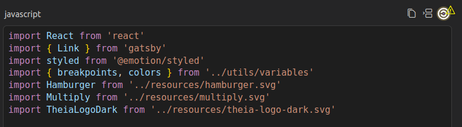
This screenshot shows a SCANOSS match for a code change made via the Theia Coder agent:
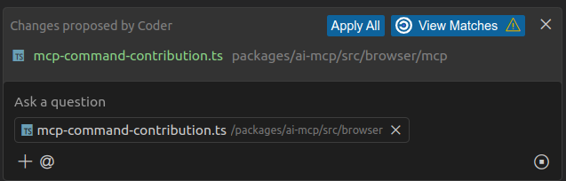
Automatic Scanning
In Automatic mode, SCANOSS scans code in the background whenever they are generated in the Chat view or via the Theia Coder Agent. Results are displayed immediately, indicating whether any matches are found.
Understanding SCANOSS Results
After a scan is completed, SCANOSS provides a detailed summary, including:
- Match Percentage: The degree of similarity between the scanned snippet and the code in the database.
- Matched File: The file or project containing the matched code.
- Licenses: A list of licenses associated with the matched code, including links to detailed license terms.
AI History
The AI History view allows you to review all communications between agents and underlying LLMs. Select the corresponding agent at the top to see all its requests in the section below.
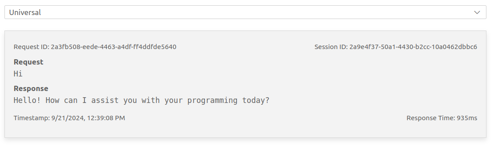
Learn more
👉 Introducing the AI-powered Theia IDE: AI-driven coding with full Control
👉 Introducing Theia AI: The Open Framework for Building AI-native Custom Tools and IDEs